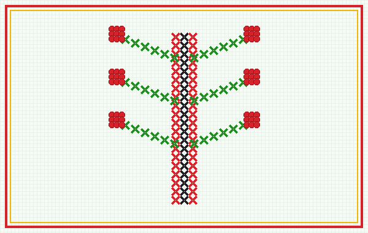

Калина
Символ безсмертя роду, краси, материнства та відродження. Червоні ягоди уособлюють життєву силу та зв'язок поколінь.
У давнину вишиванка слугувала своєрідним паспортом та оберегом людини. За візерунками можна було дізнатися, з якого краю походить власник сорочки, який має статус та які побажання вкладалися у виріб.
Усі мотиви поділяються на три великі групи: геометричні, рослинні та зооморфні.

Символ безсмертя роду, краси, материнства та відродження. Червоні ягоди уособлюють життєву силу та зв'язок поколінь.
Один із найдавніших солярних знаків, що символізує гармонію Всесвіту, світло, захист від усього лихого та духовну силу.
Образ Матері-Природи, що поєднує минуле (коріння), теперішнє (стовбур) і майбутнє (крону з квітами та птахами).
Уособлення незламності, мужності, енергії життя та розвитку. Часто поєднується з калиною на весільних рушниках.
Символ засіяного поля, достатку, добробуту та продовження роду. Зустрічається майже в усіх регіонах України.
Парні птахи, повернуті голівками одне до одного, символізують молоду пару, злагоду в родині та щасливу долю.